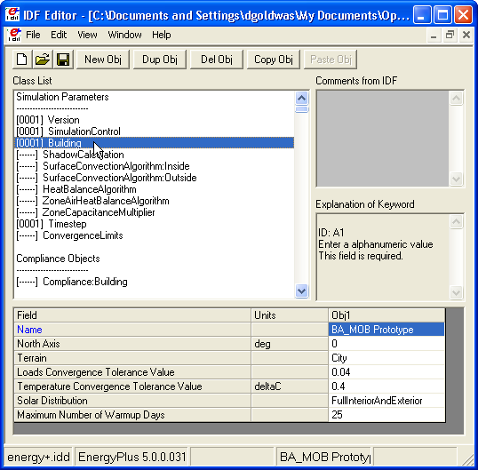
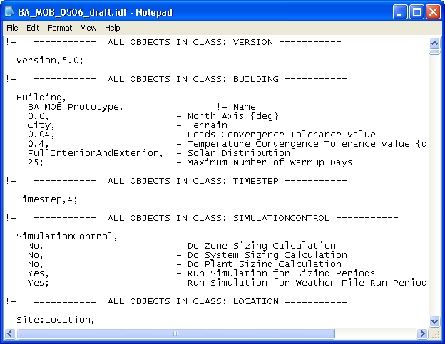
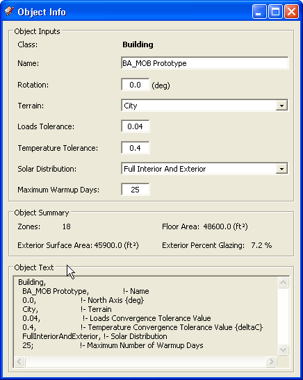
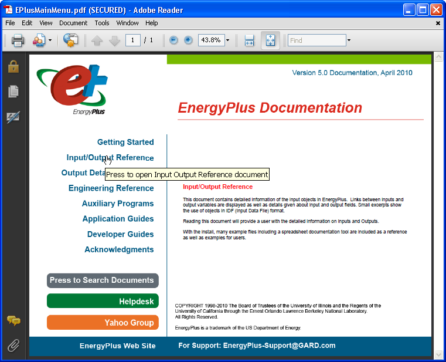
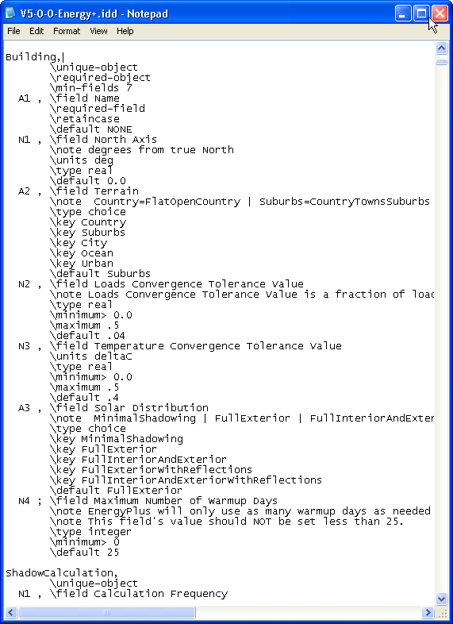
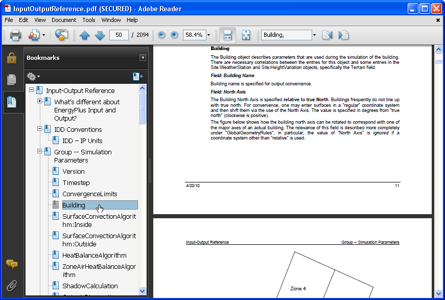
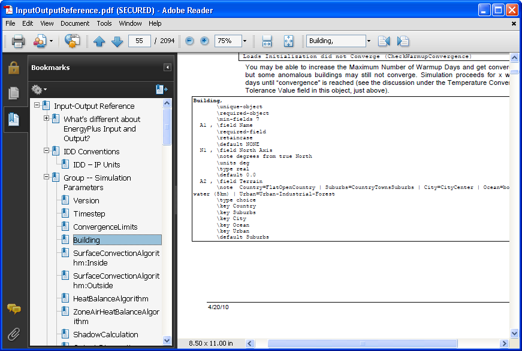

|
|
IDF Primer - Introduction to IDF file
IDF Editors
- IDF is the standard file format for EnergyPlus
models. It is a text file but with an ".idf" vs. a ".txt" extension.
- All text editors can edit IDF files. Several applications
are designed solely to edit IDF files, OpenStudio is one of these.
- There is a dedicated IDF editing application named
"IDFEditor" included with EnergyPlus. Below is a screenshot of this
application with the "Building" object highlighted. The "Building"
object is the top level object when you are in OpenStudio. It contains
the zones and the shading groups.

(Credit: David Goldwasser/NREL)
- You can also open and edit an IDF file with any text
editor. Below you can see the same information for the building as
raw text without a GUI.

(Credit: David Goldwasser/NREL)
- The "Object Information" window in
OpenStudio shows this same information in the "Object
Inputs" at the top and in the "Object Text" below. The "Object Text"
is read only, but updates when you change the information in the
"Object Inputs". This text is the same as what you see above in the
text file.

(Credit: David Goldwasser/NREL)
Anatomy of an IDF file and IDF object
- Below is sample text from an IDF file. The following
bullet points will break down the elements of the object.
!- =========== ALL OBJECTS IN CLASS: BUILDING
===========
Building,
BA_MOB
Prototype,
!-
Name
0.0,
!-
North
Axis
{deg}
City,
!-
Terrain
0.04,
!-
Loads
Convergence
Tolerance
Value
0.4,
!-
Temperature
Convergence
Tolerance
Value
{deltaC}
FullInteriorAndExterior, !- Solar Distribution
25;
!-
Maximum
Number
of
Warmup
Days
- Anything after a "!" character on a line is a
comment that EnergyPlus doesn't read. Comments are used only to provide context
when editing the IDF file by hand, they may be user entered or added by a dedicated
editor.
- The first non-comment, non-whitespace line is the one with "Building,".
This text begins a new EnergyPlus object. The first field in every object declares the type
of object which follows. This type is
followed by a series of fields separated by commas. Comments and line
breaks are optional but make the file easier to read. The last
field of an object is followed by a semi-colon instead of a comma. This
lets EnergyPlus know that it has reached the end of the object.
- An IDF file is made up of a series of individual
objects. Within an object the order of fields is
critical, however the order of objects within the file can
be changed.
- If you want to put all of your materials together and
then all of your constructions, that is fine. If you want to place
materials next to the constructions that use them, that is also fine.
It won't affect how EnergyPlus runs the simulation.
EnergyPlus documentation
- EnergyPlus has extensive PDF documentation. This is
on your computer under the "EnergyPlusV5-0-0\Documentation" folder. If you
open the "EPlusMainMenu.pdf" file you will see a clickable index to
many of the documentation files. This is the blue text at the left.
Mouse over the text to see a description of the file, and click on it
to open that file. The "Press to Search Documents" button will open up
a search window that will allow you to search through all of the
documentation files at once.

(Credit: David Goldwasser/NREL)
- "Getting Started" is a great place to start learning.
It explains what EnergyPlus is, has some tutorials on creating thermal
zones from a plan, and running simulations. It also gives introductions
to "EP-Launch", which can be used to run individual and batch
simulations and also the "IDFEditor" discussed earlier on. The
"Overall scheme/methodology for running EnergyPlus" is a great section
to read.
- The "Input/Output Reference" file contains 2000 pages
describing just about every kind of EnergyPlus object. When you see an
object and
you want to know how it is used or what fields are required, this is
the place to look. You can also look in the "Energy+.idd" file
with a text editor for a more brief description of the fields for each object.
- "Auxiliary Programs" introduces a number of
applications that you can use along with EnergyPlus including pre and
post processors.
- EnergyPlus comes with many sample IDF files under the
"ExampleFiles" and "DataSets" folders. Some of these contain complete
energy models, while others contain objects that you can incorporate
into your own IDF file. The "GeneratorswithPV.idf" example file is used in the "IDF
201" tutorial.
- The "Energy+.idd" file lists the min, max, and
default values for every object type. Shown below is the IDD entry for
the "Building" Object as viewed in a text editor.

(Credit: David Goldwasser/NREL)
- The Input Output PDF gives you more of a description
of what each field requires and how it is used.

(Credit: David Goldwasser/NREL)
- The Input Output PDF also typically gives you a piece
of the IDD relevant to that object.

(Credit: David Goldwasser/NREL)
|
|
|